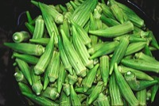

オクラの生産量 都道府県ランキング
1位から3位までと、とれた量
オクラが日本でいちばん多くとれるのは鹿児島県です。4,360 tで、全国（1万 t）の44%を占めます。

| 順位 | 都道府県 | 収穫量 | 全国に占める割合 |
|---|---|---|---|
| 1位 | 鹿児島県 | 4,360 t | 44% |
| 2位 | 高知県 | 1,550 t | 16% |
| 3位 | 沖縄県 | 952 t | 9.5% |
この数字について
- 分類：アオイ科
- 全国の収穫量：1万 t
- この数字が表すもの：収穫量（畑や田でとれた重さ）
- 調査：地域特産野菜生産状況調査 令和6年産
- 45県分を調査（調査していない県は順位に入りません）
オクラの生産量について、よくある質問
- オクラの生産量が日本一の都道府県はどこですか？
- 鹿児島県です。地域特産野菜生産状況調査（令和6年産）で4,360 tでした。
- オクラの生産量ランキング2位・3位はどこですか？
- 2位は高知県（1,550 t）、3位は沖縄県（952 t）です。
- オクラの全国の生産量はどれくらいですか？
- 1万 t（令和6年産）です。